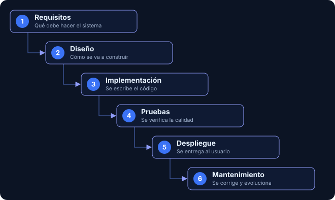
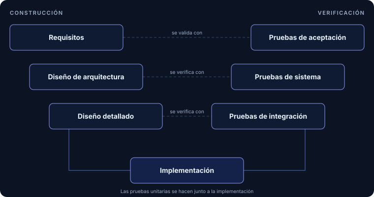
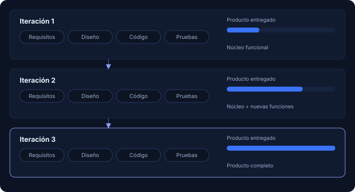

01
Modelo en cascada
Etapas secuenciales — análisis, diseño, implementación, pruebas y mantenimiento — donde cada fase valida a la anterior antes de avanzar.
Cascada F.C. reúne en un solo sitio los fundamentos de calidad de software, las técnicas de aseguramiento, el ciclo de vida (SDLC), los modelos tradicionales y las metodologías ágiles, con los estándares ISO 9126 e ISO/IEC 25000 como hilo conductor.
Cada fase termina antes de que empiece la siguiente.
Fundamentos, técnicas de aseguramiento, herramientas y estándares ISO 9126 e ISO/IEC 25000.
Ver secciónModelos tradicionales (cascada, V, iterativo) y metodologías ágiles (Scrum, Kanban, XP).
Ver secciónLas etapas por las que pasa un software, desde la idea hasta su retiro.
Ver secciónGlosario, preguntas frecuentes, enlaces útiles y ejercicios para practicar.
Ver secciónQuiénes hacemos el sitio, por qué existe y cómo contactarnos.
Ver secciónConceptos clave de calidad, métricas y estándares como ISO 9126/25000.
Etapas secuenciales — análisis, diseño, implementación, pruebas y mantenimiento — donde cada fase valida a la anterior antes de avanzar.
Atributos medibles del producto durante su construcción y una vez en ejecución: mantenibilidad, eficiencia y usabilidad.
Marcos de referencia — ISO 9126 e ISO/IEC 25000 — que estructuran cómo se evalúa y certifica la calidad de un sistema.
Ortografía, jerarquía semántica de encabezados y legibilidad responsive como parte del control de calidad del sitio.
Dos generaciones del mismo objetivo: definir, de forma medible, qué hace que un software sea bueno. Selecciona una norma para ver su estructura.
Cada característica se divide en subcaracterísticas que se pueden medir, lo que permite evaluar el producto de forma objetiva y no solo por impresión.
Mide si el software hace lo que debe hacer: que las funciones existan, sean correctas y cubran las necesidades declaradas por el cliente y las implícitas del contexto de uso.
Ejemplo: un sistema de facturación que calcula bien los impuestos y se integra con el sistema contable.
Mide la capacidad del software de mantener su nivel de desempeño durante un tiempo y bajo condiciones definidas. Incluye cómo reacciona ante errores o fallos inesperados.
Ejemplo: una app que, tras un corte de conexión, retoma la operación sin perder los datos cargados.
Mide el esfuerzo que necesita el usuario para entender, aprender y operar el sistema. Un software muy completo pero confuso tiene baja usabilidad.
Ejemplo: un formulario con mensajes de error claros que un usuario nuevo completa sin ayuda.
Relaciona el rendimiento del software con la cantidad de recursos que consume: tiempos de respuesta, uso de memoria, procesador y red bajo una carga determinada.
Ejemplo: una consulta que responde en menos de un segundo sin saturar el servidor.
Mide qué tan fácil es analizar, corregir y modificar el software para arreglar errores, mejorar funciones o adaptarlo a cambios. Impacta directamente en el costo a largo plazo.
Ejemplo: un código bien ordenado, donde corregir un error lleva horas y no semanas.
Mide la facilidad con la que el software se traslada de un entorno a otro: distintos sistemas operativos, dispositivos o plataformas, sin rehacerlo desde cero.
Ejemplo: una aplicación que funciona igual en Windows, macOS y Linux con una instalación simple.
Contexto: publicada en 1991 y revisada en 2001, ISO/IEC 9126 fue el primer modelo ampliamente adoptado para evaluar la calidad del producto de software. Distingue calidad interna, externa y en uso.
Limitación: está centrada casi exclusivamente en la calidad del producto; no cubre en profundidad la calidad en uso ni la calidad de los datos, y por eso fue reemplazada por la serie 25000.
SQuaRE (Software product Quality Requirements and Evaluation) reúne en una sola familia de normas los requisitos, las métricas y la evaluación de calidad. Se apoya en tres modelos de calidad (uso, producto y datos) y en tres procesos que los acompañan: requisitos, medición y evaluación.
Evalúa qué tan bien el software cumple los objetivos de personas reales en un contexto concreto. No mira el código, sino el resultado que obtiene el usuario al trabajar con el sistema.
Ejemplo: una app de turnos médicos con la que un paciente nuevo reserva su turno en pocos minutos, sin ayuda y sin errores.
Retoma las características de ISO 9126 y las amplía: separa la seguridad como característica propia y agrega la compatibilidad. Se define en la norma ISO/IEC 25010.
Ejemplo: un servicio web que protege los datos de sus usuarios y convive con otros sistemas sin conflictos.
Evalúa la calidad de la información que el sistema almacena y procesa, porque un software impecable pierde valor si trabaja con datos incorrectos. Se define en la norma ISO/IEC 25012.
Ejemplo: una base de clientes sin duplicados, con direcciones completas y datos al día.
Ayuda a definir qué nivel de calidad se necesita antes de construir, traduciendo las necesidades de usuarios y del negocio en requisitos concretos y medibles sobre el producto y su uso. Se define en la norma ISO/IEC 25030.
Ejemplo: si el cliente pide que el sistema sea "rápido", se traduce en un requisito medible: mostrar el listado de productos en menos de 2 segundos con 100 usuarios conectados.
Define cómo medir las características del modelo mediante métricas, para que la calidad sea algo verificable y comparable y no una opinión. Se define en la norma ISO/IEC 25020.
Ejemplo: medir la cantidad de fallos cada mil operaciones y el tiempo promedio de respuesta, para comparar una versión del sistema con la anterior.
Establece el proceso para evaluar un producto: decidir qué se evalúa, aplicar las mediciones, compararlas con los criterios y emitir un juicio. Sirve a desarrolladores, compradores y evaluadores independientes. Se define en la norma ISO/IEC 25040.
Ejemplo: una revisión previa a la entrega que compara los resultados de las pruebas con los requisitos acordados con el cliente.
Contexto: sucesora de ISO 9126, la serie 25000 integra requisitos, métricas y evaluación en una sola familia. La norma 25000 es la guía general, la 25001 cubre la planificación y gestión, y la 25011 agrega un modelo de calidad para servicios.
Diferencia clave: amplía el foco a la experiencia de uso y a la calidad de los datos, además de la calidad del producto que ya cubría ISO 9126.
Formas de probar el software para detectar errores a tiempo. Se combinan entre sí: ninguna técnica por sí sola alcanza para asegurar la calidad.
Analizan el funcionamiento interno del código. El tester conoce cómo está construido el programa y verifica caminos, condiciones, bucles e instrucciones.
Uso típico: pruebas unitarias que escribe el propio desarrollador para probar distintas funciones del código interno.
Evalúan el sistema desde afuera, sin conocer ni analizar su código interno. Se ingresan datos y se comprueba si la salida obtenida es la esperada.
Uso típico: pruebas funcionales o de aceptación que realiza un evaluador o usuario desde afuera, validando solo entradas y salidas sin ver el código.
Comprueban que diferentes módulos o componentes del sistema funcionen correctamente al trabajar juntos, sobre todo en sus interfaces y en el intercambio de datos.
Uso típico: verificar que diferentes módulos, APIs o bases de datos se comunican y transfieren datos correctamente entre sí al conectarse.
Consiste en utilizar herramientas o scripts para ejecutar pruebas automáticamente, en lugar de hacerlas manualmente cada vez.
Uso típico: correr todas las pruebas de forma automática cada vez que se sube un cambio al proyecto, para evitar errores sorpresa.
Herramientas muy usadas para analizar el código, gestionar el trabajo y automatizar pruebas durante el desarrollo.
Es una herramienta que analiza el código fuente para detectar errores, vulnerabilidades, código duplicado y problemas de mantenimiento.
Uso típico: revisar cada cambio antes de integrarlo y mostrar en un tablero cuántos errores y vulnerabilidades tiene el proyecto.
Es una herramienta para gestionar proyectos, tareas, errores e incidencias. Permite asignar tareas, seguir su progreso y controlar los problemas encontrados durante el desarrollo.
Uso típico: gestionar el proyecto mediante tableros donde se reportan, asignan y coordinan las tareas, errores (bugs) y requerimientos del equipo de calidad.
Es una herramienta para automatizar pruebas de aplicaciones web. Permite simular acciones de un usuario, como hacer clic, completar formularios o verificar resultados.
Uso típico: escribir código para automatizar de forma rápida y moderna las pruebas que simulan los clics, flujos y navegación de un usuario real en el navegador web.
Es una herramienta para probar APIs, enviando solicitudes y comprobando las respuestas que devuelve el sistema. Permite verificar si los servicios responden correctamente.
Uso típico: enviar peticiones manuales o automáticas a las APIs (endpoints) para verificar que el sistema responde con los datos correctos.
Es una herramienta que revisa el código JavaScript y TypeScript mientras se escribe, y marca errores, malas prácticas y desvíos del estilo acordado por el equipo.
Uso típico: avisar en el editor que una variable no se usa y corregir automáticamente los casos simples antes de subir el código.
Es una plataforma para organizar casos de prueba, agruparlos en planes y registrar los resultados de cada ejecución, con reportes para el equipo.
Uso típico: armar el plan de pruebas de una versión y ver cuántos casos pasaron, fallaron o siguen pendientes.
Es un conjunto de herramientas para automatizar navegadores web. Permite escribir scripts que abren una página, interactúan con ella y comprueban lo que se muestra.
Uso típico: repetir en varios navegadores el mismo recorrido de un usuario, como iniciar sesión y completar una compra.
Es una herramienta para probar aplicaciones web directamente en el navegador. Muestra en tiempo real cada paso de la prueba, lo que facilita encontrar dónde falla.
Uso típico: escribir pruebas de extremo a extremo y ver paso a paso qué hizo la prueba cuando algo falla.
Es el marco de pruebas unitarias más usado en Java. Permite escribir pequeñas pruebas que comprueban que cada parte del código devuelve el resultado esperado.
Uso típico: verificar con aserciones que un método calcula bien un total antes de integrarlo al resto del sistema.
Es una herramienta para medir el rendimiento de aplicaciones. Simula muchos usuarios a la vez y registra los tiempos de respuesta del sistema.
Uso típico: simular cientos de usuarios entrando al mismo tiempo para saber cuándo el sistema empieza a responder lento.
Es una herramienta gratuita para encontrar vulnerabilidades en aplicaciones web. Analiza el sitio como lo haría un atacante y reporta los puntos débiles.
Uso típico: escanear una aplicación antes de publicarla para detectar fallas de seguridad comunes.
Es un servidor de automatización que ejecuta tareas cada vez que cambia el código: compila, corre las pruebas y avisa el resultado al equipo.
Uso típico: configurar un pipeline que corre todas las pruebas automáticamente cada vez que alguien sube un cambio.
No encontramos herramientas con esa búsqueda. Probá con otra palabra o elegí otra categoría.
Las etapas por las que pasa un software, desde que es una idea hasta que está en uso, y por qué cada una importa para la calidad del producto final.
Todos los modelos recorren las mismas etapas del SDLC; lo que cambia es el orden, cuánto se repite cada una y cuándo ve el cliente un resultado. Compará el modelo en cascada, el modelo en V y el iterativo e incremental, con sus ventajas, desventajas y cuándo conviene cada uno.
Las fases se completan una tras otra, sin volver atrás: requisitos, diseño, implementación, pruebas, despliegue y mantenimiento. Cada fase termina con un entregable aprobado antes de pasar a la siguiente.
Cuando los requisitos son estables y están bien definidos de antemano: proyectos regulados, contratos cerrados con alcance fijo o sistemas pequeños y bien conocidos.

Es una variante del modelo en cascada que agrega una idea clave: a cada fase de construcción le corresponde un nivel de prueba, y esas pruebas se planifican desde el comienzo. Al bajar por la V se define y se construye; al subir, se verifica y se valida.
En sistemas donde un fallo es grave y la verificación es obligatoria, como software médico, automotriz o aeroespacial, siempre que los requisitos sean estables.

El producto se construye en ciclos cortos. Cada iteración repite las etapas (requisitos, diseño, implementación y pruebas) y entrega un incremento funcional que se suma a lo anterior. Iterativo significa repetir y refinar; incremental significa entregar el producto por partes.
Cuando los requisitos se van aclarando con el tiempo, en proyectos grandes que conviene entregar por partes o cuando el cliente quiere ver avances. Es la base sobre la que surgieron las metodologías ágiles.

Las diferencias más importantes entre los tres modelos, de un vistazo.
| Cascada | Modelo en V | Iterativo e incremental | |
|---|---|---|---|
| Flexibilidad ante cambios | Baja | Baja | Alta |
| Cuándo se prueba | Hacia el final | Planificadas desde el inicio, ejecutadas al subir la V | En cada iteración |
| Entrega al cliente | Una sola, al final | Una sola, al final | Parcial y frecuente |
| Documentación | Alta | Alta | Moderada |
| Ideal para | Requisitos fijos y contratos cerrados | Sistemas críticos con verificación obligatoria | Requisitos que se aclaran con el tiempo |
Aprendemos y enseñamos calidad de software de la forma más clara posible. Conocenos y escribinos cuando quieras.
Una guía sencilla para entender cómo se construye software de calidad.
Queremos que la calidad del software se entienda sin tanta complicación.
Temas como el modelo en cascada, las normas ISO o las metodologías ágiles suelen verse dispersos y con mucho tecnicismo.
Por eso los juntamos en un solo lugar, con explicaciones más cortas, comparaciones y diagramas.
Cada concepto con su definición y un ejemplo, sin vueltas.
Contenido basado en normas y bibliografía reconocidas.
Usamos en el propio sitio lo que enseñamos: diseño, accesibilidad y pruebas.
Cada integrante se encarga de una parte del proyecto.
Líder del equipo Scrum. Asegura que el equipo comprenda y aplique el scrum efectivamente.
Cuida cómo se ve el sitio y que funcione bien en todas las pantallas.
Hace que las cosas funcionen: navegación, componentes y comportamiento.
Revisa el contenido, la accesibilidad y que todo ande en cada dispositivo.
Una duda, una idea o un error que encontraste: cualquier mensaje nos ayuda a mejorar el sitio.
¿Preferís el correo? Escribinos a contacto@cascadafc.edu